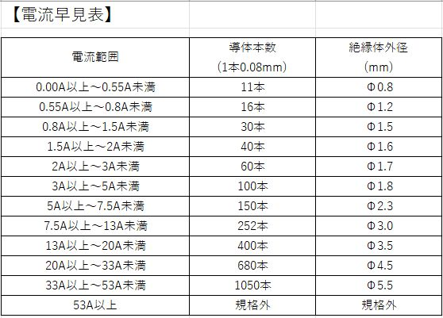

トヨタ記念病院で主に情報システム系を３２年勤務しています。
紙カルテ時代から、安心・安全の質の高い良い医療を提供する為、
病院基幹システム（電子カルテ等）の導入と運用を推進してきました。
この度、医療ＤＸの観点から、高額化するシステム開発費の軽減目的もあり
内製開発できる手法をＤＩＧに学びにきました。よろしくお願い致します。
※情報管理Ｇは、2026年1月より経営支援・デジタル変革Ｇに統合し
デジタル変革を推進していきます。
－－－－－－－－－－－－－－－－－－－－－－－－－－－－－－－－－－
私の趣味でDIYでソーラー発電をやっており、そこに使う電線は、流れる電流（Ａ）の
大きさによって太さが変わる為、「電力」と「電圧」を入力する事で「電流」を計算し、
電線の太さまで提案するツールを作成しました。
（１）入力電力（Ｗ）と 入力電圧（Ｖ）を入力する。
（２）出力電流（Ａ）を計算する。 （計算式：電流＝電力÷電圧）
（３）計算結果から導線の種類を提案する。 （「電流早見表」より導線種類を表示）
－－－－－－－－－－－－－－－－－－－－－－－－－－－－－－－－－－

■■■■■■■■■■■■■■■■■■■■■■■■■■■■■■■■■■■■■■■■■■■■■■
これ以降が 本題のツール画面です
■■■■■■■■■■■■■■■■■■■■■■■■■■■■■■■■■■■■■■■■■■■■■■
＝＝＝＝＝＝＝＝＝＝＝＝＝＝＝＝＝＝＝＝＝＝＝＝＝＝＝＝＝＝＝＝＝＝